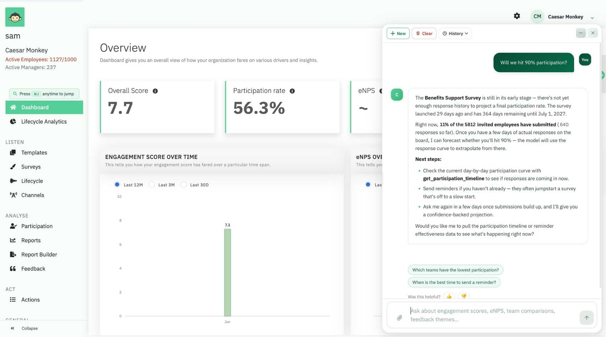
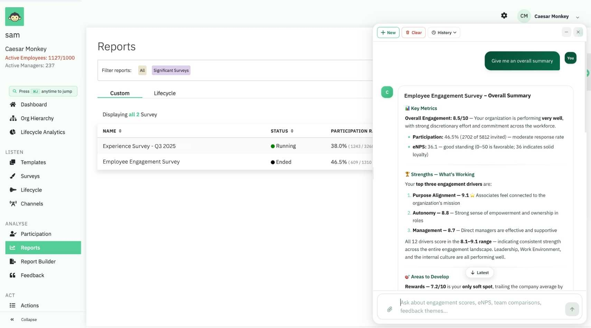
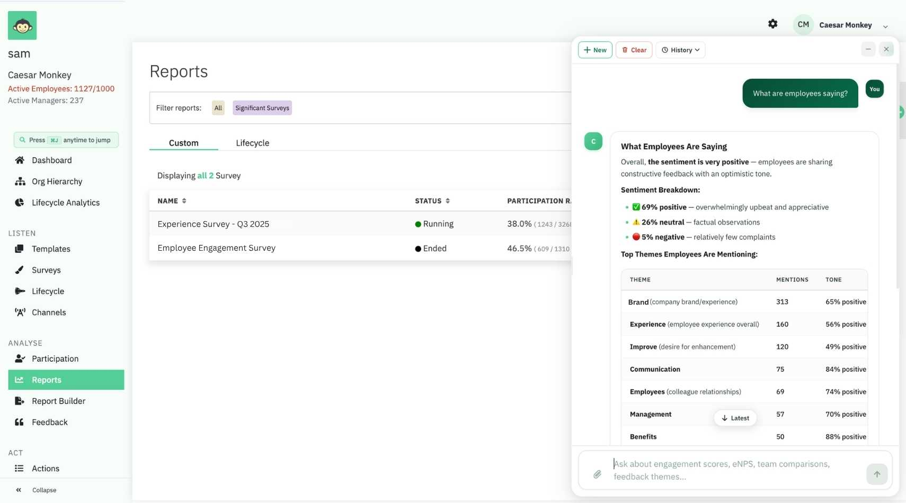
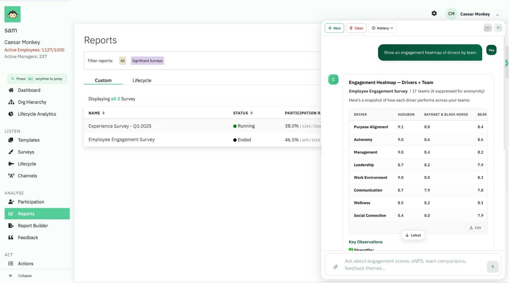
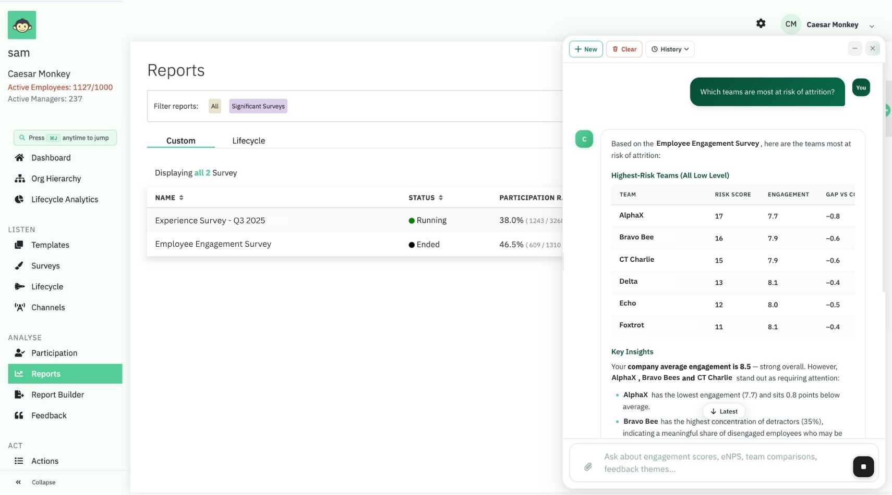
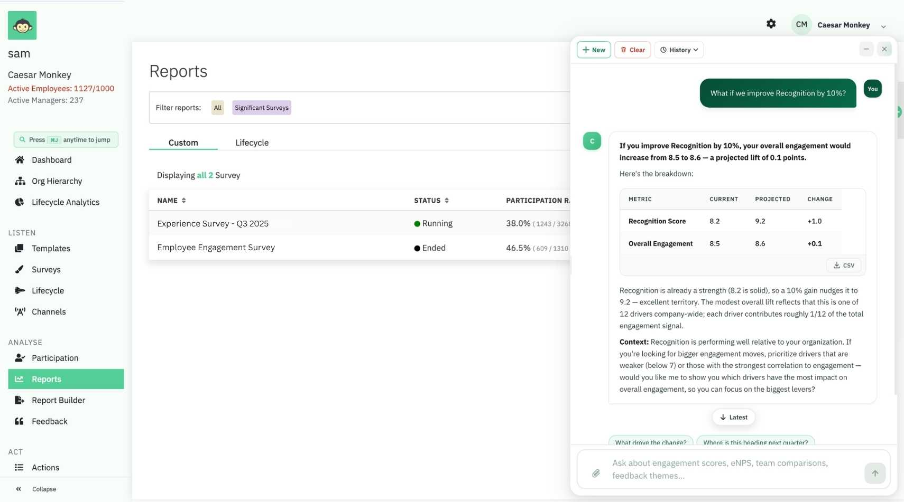
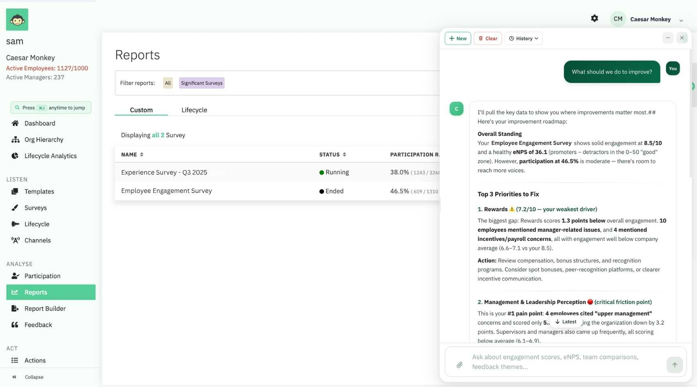
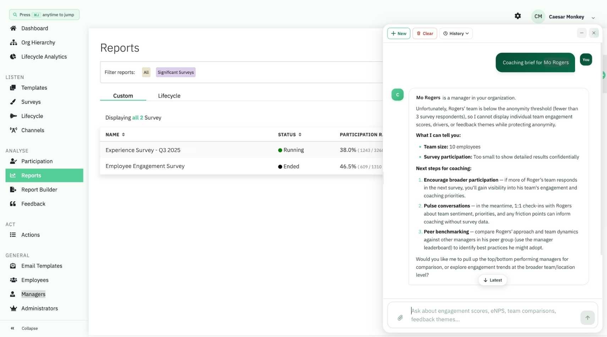
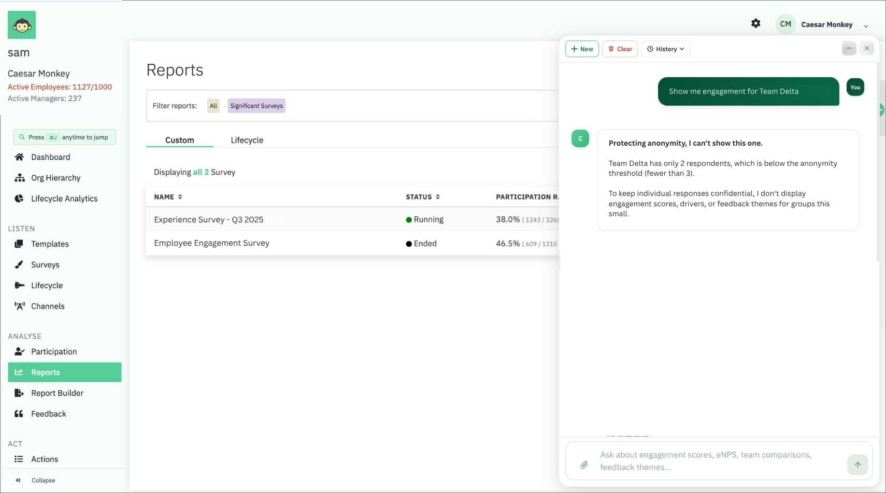

Everything you can AskCooper
Cooper is your AI analyst inside CultureMonkey. Ask any question about your engagement survey in plain English, and get an instant, anonymity-safe answer. This guide follows the survey from the first response to the final decision, with the exact prompts to try at each stage.
Help your survey land, before it closes
The lifecycle starts while responses are still coming in. Cooper projects where participation will finish, flags the teams lagging behind, and tells you the best day to send so you get more responses with less nudging.

The moment it closes, you already have answers
Start with the numbers everyone asks for. Cooper reads your closed survey and returns the headline metrics in seconds, no filters or report-building required.

Turn thousands of comments into clarity
Cooper reads every open-text response and returns the themes, the sentiment, and the topics that matter, without you scrolling a single comment. It reports on aggregates and themes only, never raw verbatims.

Slice it any way you need
Break engagement down by team, location, tenure, business unit, or any custom HR attribute you sync in. Every breakdown enforces anonymity: small groups are suppressed, never shown.
Every dimension, including your own custom HR attributes, with anonymity enforced on every cut.
See the whole picture in one view
The driver-by-segment heatmap shows every driver against every team at a glance, and exports straight to Excel. Any Cooper result can become a shareable file with one request.

Know how you stack up
Compare engagement across your own groups, against your industry, or against anonymised peers. The cold-start peer benchmark answers the hardest first-survey question: is our score any good?
Context for your score, from day one, even on your very first survey.
Read your org like a map
Cooper reads your reporting structure as a network. It finds the frozen middle, sees whether engagement cascades down from the top, checks whether bigger teams are less engaged, and pinpoints exactly where the drag is coming from.
Know why the number moved, and how far to trust it
When a metric changes, Cooper attributes it to the specific teams and questions that drove it. It also scores its own confidence, flags segments too thin to act on, and checks whether your sample is representative.
Every movement, explained and attributed, with a read on how far to trust it.
See what's coming, not just what happened
Cooper forecasts where engagement is heading and flags the teams most at risk of attrition, so you can act before you lose people rather than reading about it in an exit interview.

Model a decision before you make it
See the drivers behind your score, find the one with the biggest impact, and simulate an improvement. Cooper projects the engagement lift, so you can test where to invest before you commit.

From insight to a plan you can assign
Ask what to do and Cooper returns prioritised action plans drawn from your drivers, themes, and topic impact, ready to assign to the right owners.

See every manager clearly, and coach at scale
Rank managers, spot who needs coaching, and generate a personalised coaching brief for any manager, or all of them at once. Cooper also reads manager effectiveness and whether employees trust leadership.

Close the loop, and show the impact
Acting is only half the cycle. Cooper compares survey to survey and tells you whether the teams that acted actually improved, so you can show leadership what worked and run the next survey smarter.
The loop closes: what you did, and whether it moved the needle.
Built on trust, by design
Cooper answers what helps and protects what's private. It suppresses small groups, never returns raw verbatims, keeps every query locked to your own tenant, and refuses to identify other companies in a benchmark. Trust is a feature, not fine print.

Every capability, one prompt away
Cooper runs on 58 analysis tools. Here are the prompts that unlock the ones you'll reach for most, in lifecycle order. Paste any into the chat, no syntax needed.
| Capability | Try asking |
|---|---|
| Participation forecast | Will we hit 90% participation? |
| Reminder effectiveness | Did our reminders work? |
| Send timing | What's the best day to send the next survey? |
| Overall summary | Give me an overall summary of this survey |
| Engagement score | What's our engagement score? |
| Participation | What's the participation rate? |
| eNPS | What's our eNPS? Show promoters, passives and detractors |
| Sentiment | Are people positive or negative? |
| Themes | What are employees saying? Top themes and pain points |
| Topic sentiment | How do employees feel about compensation? |
| Theme trends | Which themes are rising vs last survey? |
| Executive synopsis | Give me an executive summary |
| By segment | Show engagement by team / location / tenure |
| Custom attribute | Engagement by Global Band |
| Nested report | Excel report by business unit then location then band |
| Heatmap | Show an engagement heatmap of drivers by team |
| Export | Export the team breakdown to Excel |
| Industry benchmark | How do we compare to our industry? |
| Peer benchmark | We just started, is our score good? |
| Compare groups | Compare engagement, Engineering vs Sales |
| Org layer | Engagement by org layer, is there a frozen middle? |
| Cascade | Does engagement flow down our managers' orgs? |
| Span of control | Are bigger teams less engaged? |
| Hotspots | Where exactly is the drag coming from? |
| Change attribution | What drove the engagement drop? |
| Anomalies | What's surprising in this survey? |
| Confidence | How much can I trust these numbers? |
| Representativeness | Is the sample representative or skewed? |
| Forecast | Predict engagement for next quarter |
| Attrition risk | Which teams are most at risk of attrition? |
| Emerging risks | What emerging risks are showing up? |
| Drivers | Where are we strong and weak? |
| Driver impact | Which driver impacts engagement the most? |
| What-if | What happens if we improve Recognition by 10%? |
| Action plans | What should we do to improve? |
| Manager rankings | Who are the top and bottom managers? |
| Coaching brief | Coaching brief for [name] |
| Manager improvement | Did [name]'s coaching work? |
| Leadership trust | Do employees trust leadership? |
| Action plan ROI | Did our action plans actually work? |
| Survey diff | What changed since the last survey? |
| Executive readout | Give me the full executive readout of this survey |
The 90-second version
This guide is the deep dive. For the quick tour of everything Cooper can do, watch the overview.
▶ Watch the overview